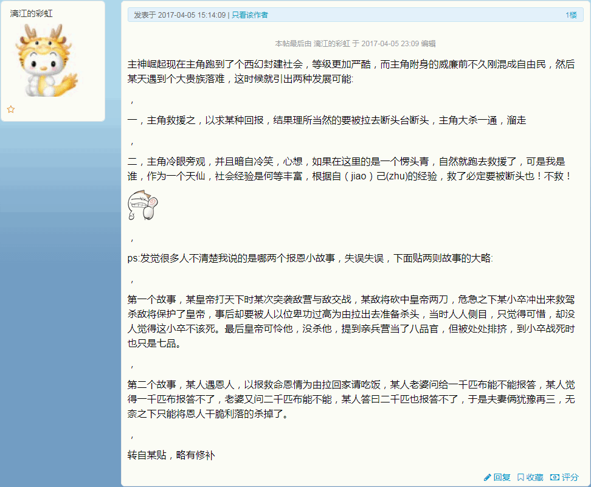

翻出旧帖备份，摘抄当年在之江临安「原创文学论坛」之上与爱国贼斗嘴时关乎马扎尔人反装忠以权谋私的发言：
问题是苦主还诉冤无门吖，这帮心狠手辣的军阀还都是民族英雄吖，有高音喇叭循环播放振我国威扬我军威的洗脑段子吖，有聚贤庄法西斯灌水机爱国贼带节奏吖。左宗棠一回王震一回，楚人在新疆吃得盆满钵满。
所以，咱也不跟爱国贼斗嘴，写西幻压根不提“黄种人”，专心抹黑白皮可也。就说这段情节也已经构思好了，背景放在匈牙利王国，马扎尔名将“左宗棠”收复波黑，马扎尔名将“王震”主持“阿尔巴尼亚生产建设兵团”。
哈布斯堡一直怼奥特曼，匈牙利王国是外来塔尼亚方向主力，本位面奥匈帝国时期的外来塔尼亚不再是各少数民族平等，而是马扎尔人凌驾于南斯拉夫人之上。这一段可以照搬到西幻架空平行世界背景当中。
比方说马扎尔名将“左宗棠”自筹军费抬着棺材去波黑，往塞族村庄扔个禁咒说是绿人干的，然后屠了绿人村子，这就是两个“骑士领”到手，“无主之地”正好用来分封追随者嘛。人缘好情商高的青年才俊一直教导屁民，小弟跟着老大混是要有好处的。
马扎尔名将“王震”也一样，一边喷哈布斯堡舞会救国裤裆开疆，一边叫嚣着枪杆子戳到的地面才是我大匈牙利领土，扬我国威振我军威，仨阿尔巴尼亚人一起上街一定是造反，当场斩杀可也。
就是这样，境内爱国贼再怎么炒作“惟楚有才”都随它们的便，我只写“惟匈有才”：大匈牙利人杰地灵吖，若要哈布斯堡灭亡除非马扎尔人死绝吖，开国元勋中兴名臣占了一半吖。
差不多已经是构思雏形了。
还有个当时谈及《设定集》的时候顺手举例码字论证插入充沛「政治与意识形态」要素之后「艺术来源于生活又高于生活」的西幻文风：
“辛苦了”，隐藏在一片黑暗当中的人影说话。
“局长言重了……不过，为了这份情报，我们几乎损失了所有人手，军统那边也损失惨重”
“哦？军统也掺和进来了？”
“嗯，这次的目标实在棘手，若是不联手，恐怕党国一点机会都没有”
这时候“局长”才注意到手中的文件。
【约格莫夫之屌】 ☠⓵
传奇神器生物
（异能）
- 隔江犹唱后庭花（不需横置）
- 支付法力黑X，消灭场上X个非黑雄性生物。
- 凌辱调教为肉便器（不需横置）
- 支付法力黑X，消灭场上X个非黑雌性生物，每消灭一个非黑雌性生物，进场一个黑色衍生物。
- 逮捕慰安妇性奴（不需横置）
- 支付法力黑X，被消灭的非黑雌性生物复活为黑色雌性生物。
- 修改公安部档案（不需横置）
- 支付法力黑X，场上X个黑色衍生物依附于场上X个非黑雄性生物。
- 修改民政部婚姻登记记录（不需横置）
- 支付法力黑X，复活的黑色雌性生物依附于已依附黑色衍生物的非黑雄性生物。
- 弑夫弑父（不需横置）
- 支付法力黑X，消灭场上已被依附黑色衍生物和黑色雌性生物的非黑雄性生物。
- 一日夫妻百日恩（不需横置）
- 支付法力黑X，已被消灭的非黑雄性生物上所依附的黑色雌性生物复位。
- 血浓于水（不需横置）
- 支付法力黑X，已被消灭的非黑雄性生物上所依附的黑色衍生物复位。
“这也太强大了吧”，局长倒吸一口冷气，“不信还有人能抵抗得住”。
“有个例外”，属下回答，“有人杀伐果断，主动献祭了附属雌性生物，并支付法力黑X，召唤了X个黑色衍生物将伤害转移给某无色生物”
“谁这么厉害？”
“不知道，东南沿海的某个家伙，额头有个蜘蛛纹身”
“那是妈祖的纹章”
“或许吧”
“转移伤害的结果如何？”
“不知道，还没到结算回合，不过对方自称‘孤苦伶仃可怜废柴草根文盲矬胖老穷光棍汉’，想必不太好惹”
“怎样才会出现这张‘约格莫夫之屌’呢”，局长感慨，“皮破肉烂手足残缺，浑身上下的脓包中渗出黑绿色液体，各种蛆虫爬满全身……想必代价不小吧”
“没有任何线索”，属下摇头，“只有个神谕，可遇不可求”
“那是什么？”
“天龙寺外，菩提树下，化子邋遢，观音长发”！
除了「召唤恶魔」是典型西幻因素之外，「要圣旨？来人呀给他写一张」「女人的阴道直通心灵（张爱玲语）」「爹一直在牵挂着你」「杀妻证道」「栽赃陷害」「冤假错案」「替身代劳」「家里也是为了你好」「你有身份证么」「哪儿来的野种」之类砥砺奋进七八年来常见套路都出现了。
还有在《教主盗天仙途206章报恩小故事的观点会不会被文抄公吸收引用呢？》相关讨论当中结合对网文段子的评论解释第二篇设定《通背拳法与居合斩》当中主角汉斯的处境以及「全局最优解」：

Icadius
喝多了回来了，简单写几句睡了。这一套故事的破绽就在于，凭啥轮到一个小兵来力挽狂澜？解释不了这个问题，整个剧本都不可能成立。
按照奥康剃刀原则，最简单的解释就是，皇帝/国王/领袖身边的那一帮豪门贵种都有自己的如意算盘，也就是多方下注左右逢源。所以，一把手挂不挂其实都有预案。
然后就简单多了，形势不妙的情况之下，一帮豪门贵种都出工不出力，等着一把手挂掉就启动B计划。但是演戏总不能这么赤裸裸，于是安排了一帮“小兵”出场当龙套。
按照正常推演，基层草根出身的傻哔抹布炮灰们螳臂挡车必将被历史车轮碾成齑粉，于是对剧本没有任何影响。但是计划没有变化快，万一有谁逆天了救驾了改变历史洪流了咋办？
然后嘛，补救措施就出来了。若是剧本还在导演掌握之中，那么就干掉党国栋梁，继续演下去。若是剧本已经超越控制了，那么就干掉啥“功臣”，其它豪门贵种跳出来摘桃子灭口邀功请赏。
说穿了就这么简单，欢迎网文写手及其背后赞助商对号入座。
Icadius
下午说过了，“破绽在于为啥轮到小兵去救驾而其它高第良将不见人影”。
就是说，剧本很可能是曹昂、孙策、司马师那种套路，被塞成侍卫的小兵忽然发现豪门贵种有多远躲多远，在远方高呼着“圣上莫慌”然后指挥“奴才们给我上”，奴才们一边吆喝一边原地踏步……这时候咋办？
这就是咱反复提醒的“应用情商学的智力基础”：反装忠会不会？磨洋工会不会？睁大眼睛额头亮晶晶的装蒜兼贵人多忘事会不会？被塞成侍卫已经上当了，钦定的背锅侠傻哔抹布炮灰，救驾不成当然算失职一定被干掉，救了驾也会被找个借口干掉。
那怎么办呢？很简单，既然已知豪门贵种的剧本就是趁机换个主子，那么救驾就是破坏了其阴谋诡计。开弓没有回头箭，被逼到绝路上的小兵，应该从此走上对抗豪门贵种走兽派的革命道路。
加一句，“天下兴亡”才匹夫有责，可不是“国家兴亡”哟，这种国家爱亡不亡，反正背黑锅的是主子，其它豪门贵种走兽派换个主子照样吃香的喝辣的。当兵就要当兵油子，冲锋在后，让其它傻哔炮灰送命。不需要坚持多久，按照军事理论，伤亡达到四分之一就没士气了，该撤退了。
注意撤退也在后，让先跑路的傻哔炮灰被督战队斩了一批再说。还要把军帽摘下摔在地上，一屁股坐倒扮作气急败坏状，“妈哔的老子拼命都特么没用”，这种时候就要看演技了。
Icadius
再加一句吧，我的设定当中也是这么构思的：《范版西幻设定集》之二《通背拳法与居合斩》
之所以被安排成宫廷侍卫的角色，还有“家里”提醒说注定支持一个钦定失败者，让他自己留意，并不是因为啥亲情友情爱情之类正能量，而是本着废物利用的原则。
设定的舞台是法兰西王位继承战争“八公爵之乱”，每个家族都在每个阵营里面下注，互相掺沙子。钦定胜利者就一个，钦定失败者至少七个，而七个钦定失败者当中还得回到蒂罗尔再斗一场。所以把抹布直接扔在法国划不来，还得另找一块抹布。
Icadius
爱的战士楚白
那个肯定不是桶狭间的典故，我之前不是都说过了嘛。
桶狭间两大功臣事后被信长提拔为亲卫，真正的是冲锋在后撤退在前，安安稳稳地拿俸禄，后来信长还把他们派给自己的继承人信忠继续当亲卫，摆明了就是要等织田家取得天下，让他们成为近臣——官位虽然不高，但荣华富贵可不少。
天底下没有比这更让人羡慕的工作了啊！
奈何织田家仆街了……
对吖，剧本安排了织田为王前驱，桶狭间没仆街，到本能寺也该仆街了。明智光秀算不算“高第良将”呢？这么一想，剧情就豁然开朗了也。
Icadius
爱的战士楚白
明智光秀个扑街仔还“高第良将”呢，你睁着眼睛说瞎话呐。
日本战国时代，天皇饿得跟狗一样，将军一个接一个死，室町时代的名门仆街满地，崛起的强势豪雄们也死得一窝一窝的，佛教被屠杀了一遍，基督教也被屠杀了一遍，商人动不动被抄家灭门……
除非天上掉下来一只野生的上帝，否则谁来写这个鬼剧本？
所以我的最新设定当中特意提到了“吕不韦”式商战秘诀以及美第奇家族的商战实践，只要拱起一个主子来，随便滥发赎罪券就赚大了。当然后果也要提前考虑到，所以同时提到了奥斯维辛吖。
Icadius
为啥讽刺荆柯守那一套“道法龙气论”，因为反例上面提到过了吖。三朝大贤良师，正一道嫡传弟子，王沪宁真君，不仅没有因为道法而止步于举人，反而一路青云直上当了中央政治局委员呢。这个破绽荆柯守不打补丁，那它的书里什么理论都是口胡，各位看个热闹就得了。
洗完澡了精神抖擞容光焕发，把在九省通衢の煎蛋搜集的情报补充进《〈恶补记〉流水帐〔５６〕》当中。
三年半以前这帮自诩始终代表了最先进生产力的知识分子如何运用赛博朋克混混鸡鸣狗盗之徒在之江临安「原创文学论坛」阻挠我连载第四篇设定《谁说知识就是力量》时引述的大批伟大光荣正确的至理名言，并在我以「你们有知识我看见了，你们的力量在哪儿呢」嘲笑之后将我的帐号以「政治敏感」理由「亦当删去」的所谓以大拇指搓手机驾驶历史の五对负重轮将不自量力螳臂挡车跳梁小丑历史唯物主义的尘埃碾为齑粉的丰功伟绩，现在都可以连本带利奉还。
之前多处谈笑风生当中都提到了，尤其是《设定集》注释以及其「疏」《恶补记》，我把数学当作信仰，而不是谋生或「撒谎偷窃诈骗」的工具。并且这种信仰还是「绝对真理」，比市面上其它竞争教条不知伟大光荣正确到哪里去了，高学历精英也找不到任何质疑的破绽。
发达的资本主义国家当中人民群众是如何进教堂做礼拜交什一税的，跑步进入赛博朋克时代的新石器时代活化石当中人民群众是如何每天五次撅着屁股以天灵盖百会穴遥指三洲通衢的，欠发达的闭关锁国内卷化的中世纪余孽当中人民群众是如何勒紧裤腰带给贼秃牛鼻子巫婆神汉上贡的，与时俱进的社会主义现代化强国当中人民群众是如何入队入团入党并购买智能手机下载划时代哎屁屁学习强国刷积分榜的……我就是如何坚持对数学理论学以致用的。
总之，断网这三天，回顾了已经上传的内容，补充了目录的备注，翻出备份的发言作为旁证，进一步展现了「为了政治和意识形态斗争而创作」的《设定集》相关剧情的构思过程，对灵感来源还提供了出处……正所谓数学渣职业习惯当中的「无一字无来历」原则者也。